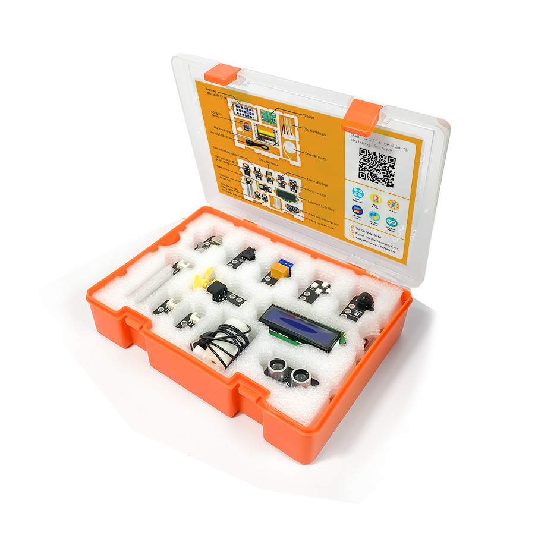
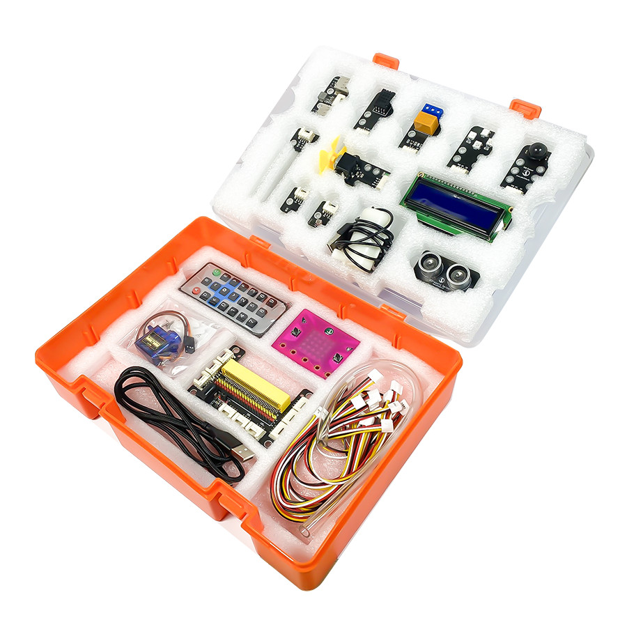
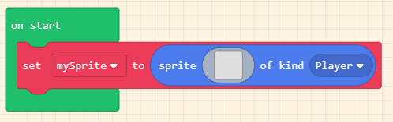
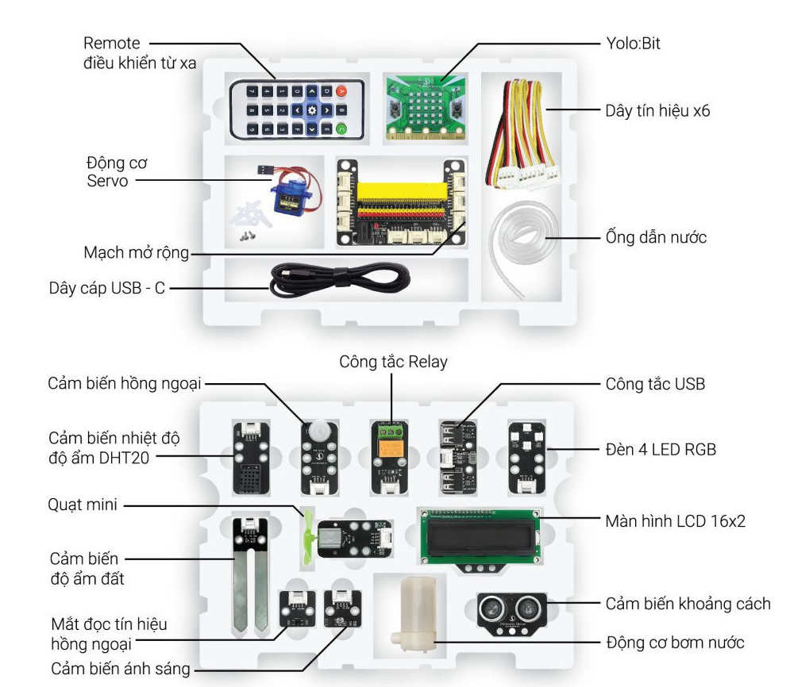

1. Giới thiệu về bộ KIT AIoT
{kind=link}
1. Link mua sản phẩm:
2. Tổng quan về AIoT KIT
AI hay IoT là những thuật ngữ đã trở nên thông dụng trong đời sống hiện nay. Sự kết hợp của 2 công nghệ này với nhau được gọi tắt là AIoT (Artificial Intelligence of Things).
AIoT là sự kết hợp của IoT và trí tuệ nhân tạo AI để tạo ra các thiết bị, hệ thống có khả năng học hành vi của con người và thích nghi với môi trường của chúng, từ đó tăng cường khả năng dự đoán. Trong đó:
IoT sẽ kết nối mọi người với mọi thứ trên thế giới thông qua mạng Internet
AI sẽ đào tạo máy tính để chúng có khả năng hiểu dữ liệu mới, dựa trên các mô hình của dữ liệu tương tự.
Một số ví dụ về sự kết này là xe tự lái có khả năng tự phát hiện một người đột nhiên cản đường và kích hoạt phanh kịp thời, để không đâm phải vào người qua đường, hoặc là các khu trung tâm mua sắm thông minh có tích hợp AI, giúp phát triển các chương trình ưu đãi được cá nhân hóa, dựa trên việc nhận dạng khuôn mặt.
Trong tương lai, AIoT sẽ tác động đến hầu hết mọi lĩnh vực công nghiệp, từ hàng không, đến chăm sóc sức khỏe, tài chính, sản xuất. Vậy, làm thế nào để chúng ta có thể tiếp cận công nghệ mới này một cách dễ dàng nhất?
OhStem cung cấp bộ KIT dùng để tự nghiên cứu về AIoT, với nhiều cảm biến thông dụng nhất. Bộ sản phẩm đi kèm với giáo trình và bài giảng thực tế, gần gũi với đời sống chúng ta. Đây là sản phẩm thích hợp cho người mới bắt đầu tìm hiểu lẫn những người đã có nền tảng kiến thức ban đầu về AIoT, đáp ứng gần như đầy đủ nhu cầu tự học và tự nghiên cứu AIoT.
{kind=link}
Bạn có thể lập trình dự án AIoT cho mình bằng phương pháp kéo thả khối lệnh đơn giản, hoặc bằng những ngôn ngữ như Python hoặc C (Arduino) tùy thích. Kéo thả khối lệnh là ngôn ngữ phù hợp cho người mới bắt đầu, cho phép các bạn có thể nắm vững các kỹ năng về công nghệ, từ đó nghiên cứu sâu hơn về lĩnh vực AI và IoT.
{kind=link}
3. Thành phần

{kind=link}
Thành phần của bộ kit AIoT gồm:
Máy tính lập trình mini Yolo:Bit (tùy chọn)
Cáp USB type C (tùy chọn)
Mạch mở rộng Yolo:Bit
Cảm biến nhiệt độ độ ẩm DHT20
Remote
Màn hình LCD
Đèn 4 LED RGB
Mắt đọc IR
Quạt mini
Cảm biến ánh sáng
Cảm biến độ ẩm đất
Relay
Cảm biến chuyển động PIR
Động cơ Servo SG90 180 độ
Cảm biến khoảng cách
USB đóng ngắt 2 kênh
Máy bơm mini USB
Dây tín hiệu